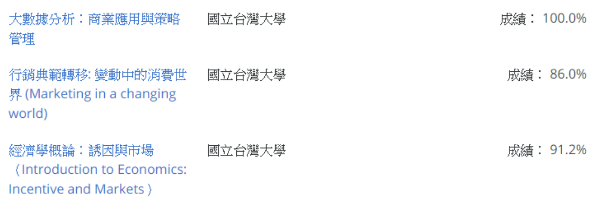

中興大學 應用經濟學系
桃園市陽明高中 劉韋杉
xaviorliu@gmail.com
IG:653_0926
『先在腦海中構建未來，才可能在現實中實現未來』
前言
我是桃園市陽明高中第一類組的劉韋杉，透過特殊選才錄取中興大學應用經 濟系，以及中正企管備1和中正財金備2。特殊選才主要招收具有特殊才能、經 歷或成就的學生，由各校單獨招生。以下想要分享我的學習歷程和建議，希望 在你們追逐夢想的道路中能夠幫助到你們。
比賽經歷
1. 第17屆高中地理奧林匹亞競賽小論文組二等獎2. 第17屆高中地理奧林匹亞競賽小論文組海報特優獎
3. 第17屆高中地理奧林匹亞競賽小論文組海報人氣獎
4. 107年度高中職地理資訊系統創作競賽第一名
5. 106年度高中職地理資訊系統創作競賽佳作
6. 校內網頁比賽高二組第一名
7. 桃園縣第54屆中小學科學展覽比賽國中數學組第一名
8. 全國第40屆奧林匹克數學檢定合格
9. 桃園縣第55屆中小學科學展覽比賽國中數學組佳作
國中的我對於各種新事物都充滿好奇，在一次偶然受到數學老師的啟蒙，開 啟了我之後的比賽生涯。從最早開始的數學科展，學習如何進行問題的設想和 團隊分工合作，以及將作品的內容做成海報講解給教授聽。這些在準備的過程 中是辛苦的，但是卻能從中解決自己的好奇心，當作品完成時會產生很大的成 就感，這是我在課堂上較難獲得到的。之後也二度參加數學科展以及其他的數 學競賽。
高一接觸到地理資訊系統(GIS)，學習用QGIS和Super GIS繪圖軟體繪製地圖 。並研究桃園的土壤污染和水汙染問題參加地理資訊系統創作競賽，完成專題 報告比賽。發現自己對於社會中的空間面向和經濟議題等人文科學領域感興趣 ，因此在高二的暑假參加地理奧林匹亞小論文競賽，探討桃園再生能源的問題 ，並進一步提出解決方案，最後獲得小論文組二等獎。
課外活動
1.第十七屆高中生人文與社會科學營2.桃園市兒童及少年福利與權益倡導培力少年代表
3.參與青年職能培訓參與式預算試辦計畫提案並成功施行
4.107年桃園市青年節籌備委員會委員
5.中央大學「玩遊戲，學經濟」一日體驗營
6.高中職地理資訊系統應用與推研習營
7.金研院高中職學生夏日理財營
8. 自己規劃行程火車環島
9. 未來城鄉，青少年工作坊
10. 交大電機一日體驗營
對於我而言，高中是自我探索和試著將心中想法實現的階段，也曾迷惘過， 在課堂上放空，懷疑自己在教室裡學習是為了什麼。在高一的暑假參加「第十 七屆高中生人文與社會科學營」，透過學習不同領域的課程，開拓我的人文視 野，激起對人文及社會科學的興趣。之後也不斷參加各個領域的活動，包括金 融、地理、資工、電機、經濟以及公共事務的參與，去探索自己的興趣。
MOOC 線上課程學習
在高中階段透過開放式課程網站共完成14門大學課程，課程如下
| 網站名稱 | 課程名稱 |
| 中國大學mooc | 1.微觀經濟學 2. 行為經濟學 |
| ewant育網 開放教育平台 | 1. RFID技術與認證 2. 不只是簡報 3. 學會學 : 學習之道 ( Learning how to learn ) |
| coursera | 1. 經濟學概論：誘因與市場 2. 行銷典範轉移: 變動中的消費世界 3. 大數據分析：商業應用與策略管理 |
| 學堂在線 | 1. 經濟學原理 2. 清華院系概覽 3. 經濟地理與企業興衰 4. 金融體系概覽 5. 運營概論 6. 什麼是經濟學 |
MOOC意味著Massive Open Online Course ( 大規模線上開放課程 )，在高一下 偶然得知coursera這個開放式課程網站，裡面有非常多的課程資源可以學習，透過 各個大學教授親自教授該領域的知識，可以根據自己的興趣挑選妳想要上的課程，透讓你對於這個科系有更多的了解。 我常用的MOOC網站還有：學堂在線、 ewant育網開放教育平台、中國大學 MOOC。完成影音學習以及老師安排的作業和考試後，會有成績或是獎狀證明。
書審資料及面試
特殊經歷報考規定我是以新住民子的身分報名，而篩選條件是需於經濟或農 業類相關領域有特殊成就或表現，足以證明對相關領域具備發展潛力與熱忱者 。特殊表現我以經濟學科成績優異、地理奧林匹亞競賽、數學科學展覽競賽以 及其他特殊表現ex：線上自學大學課程，參與經濟和金融相關活動等等。關於個人資料表和自傳都有規定格式，其他有利審查資料需要花多一點心思 去構思，盡量精簡，但是卻能讓教授快速抓到重點且能眼前一亮那種，在資料 裡放跟你申請的科系相關的學習歷程或獎狀，不要韜光養晦，隱藏自己的特色 ，強化自身的優勢，想一下自己特殊的才能是什麼，為什麼教授要錄取你？
進入面試階段，自我介紹的內容可以先從你的成長背景到國高中經驗，有組 織和層次的去介紹自己。聲音盡量大聲，當然不要緊張，要有自信。可以帶自 己的作品在自我介紹的時候介紹，或是直接講出你的特殊才能是什麼，像我那 個時候是說： 「我能利用地理資訊系統GIS探討經濟發展與環境互動，並繪製 地圖做視覺化呈現，將所學經濟學知識與地理做跨領域的應用。」 這樣較能夠 瞬間吸引住教授的目光。因此不管是論文還是你收集的東西，抑或是自己完成 的作品，像我就準備關於我用地理資訊系統GIS繪製的作品集和論文，只要能展 現你的個人特質或特殊才能就可以。
總結
特殊選才不是一條簡單的路，不光是有比賽經歷和學科表現優異就能取勝， 面對其他具備特殊才能的報名者，還需在書審及面試中明確的說明自己的學習 歷程，展現你的個人特質。我們每個人都想，也有資格過上自己想要的未來，前 提是你要向這個世界，證明自己的價值。
但是老實說在報特殊選才前，我並不認為自己有什麼特殊才能，但是我想 說的是即使在充滿未知數的未來，我們仍然不該失去應有的夢想和熱情。因此 心裡想說：有機會就去試試看，沒試過你怎麼知道你不行？只要你有跟別人不 同的特色都可以嘗試看看。其實很多時候都是這樣，如果真的有件非常想做的 事，就放手去做，做好計劃並付諸實現，不管成功與否都是你人生中重要的經 驗和養分。
以上經驗希望對學弟妹有幫助，勇敢去嘗試並追逐自己的目標，不管結果 如何，都深信以你的特質與過往的表現，未來一定可以找到能讓你發光發熱的 場域。